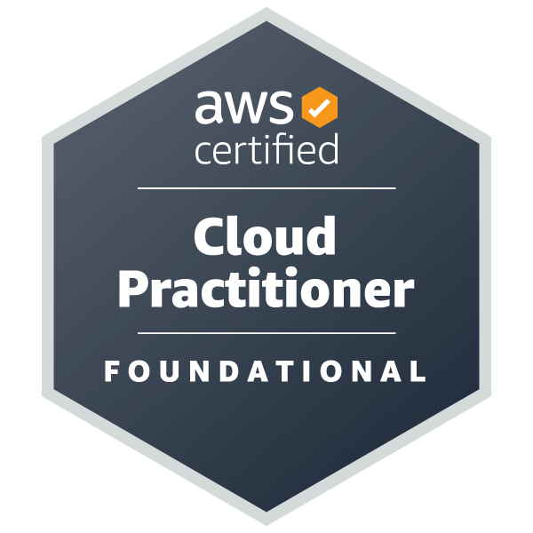

Keith Robinson
Trainee AWS Solutions Architect

 Visitors:
Visitors:
I am currently completing my AWS Solutions Architect certifications together with practical
hands-on experience to support my aim to refocus my career in IT, with a specific interest
in cloud computing.
I am attracted to the problem-solving and innovative nature of cloud
computing which fits well with my strengths and the transferable skills I have developed in
my work as a retail packaging consultant.
This is a condensed CV for The Cloud Resume Challenge. To view my full CV, please visit my LinkedIn Profile
- Experience
-
Trainee AWS Solutions Architect Nov 2023 - Present
Full-Time Study Dishforth, North Yorkshire
Owner / Consultant Aug 2009 - Nov 2023
KMR Branded Packaging Solutions Knaresbrough, North Yorkshire
Product Manager Nov 2004 - Aug 2009
Wagg Foods Ltd Dalton, North Yorkshire
Account Manager Oct 2003 - Nov 2004
Derek Stephenson Associates Leeds, West Yorkshire
Senior Designer Jul 2000 - Oct 2003
Guava Wokingham, Berkshire
Graphic Designer Jul 1998 - Jul 2000
Rodger Barnes Design Works Hamilton, Scotland
Graphic Designer Jul 1995 - Jul 1998
Seriously Visual Glasgow, Scotland
- Education
-
Teesside University 1992 - 1995
BA (Hons) Design Marketing
Grade: 2:1 - Certifications
-
AWS Certified Solutions Architect – Associate Issued Oct 2023
Validation Number: X2N42KY28JVE1JSL
Show credential
AWS Certified Cloud Practitioner Issued Jun 2023

Validation Number: 8ZW1GR1201BQQP5N
Show credential
- Skills
-
Soft Skills
- Problem solving - looking at the 'bigger picture' view of the processes involved in projects, identifying changes in key areas that can optimise delivery of client outcome.
- Adaptability / flexibility - adjusting methods and principles to achieve pragmatic solutions.
- Account and client handling – relationship management has been a central part of my work over the past 19 years.
- Effective project management – I support my clients by understanding the end-to-end process, ensuring effective prioritisation and optimised delivery.
- Experience of managing small teams in busy, production-focused environments.
Hard Skills
- Advanced - Adobe Creative Cloud, Microsoft 365.
- Intermediate - AWS (services, console & CLI), Microsoft Windows.
- Foundational – Networking, HTML, CSS, Docker, Python, MySQL.
- Hobbies
-
- Following motorsports (BTCC, WRC, World RX).
- Bass player in York-based post-punk synthwave band 'Preventer'.
- Music composition, recording & production.
- Sim-Racing & video games.
Read my 'Cloud Resume Challenge' journey >
How I used AWS serverless services & GitHub for this static web page.